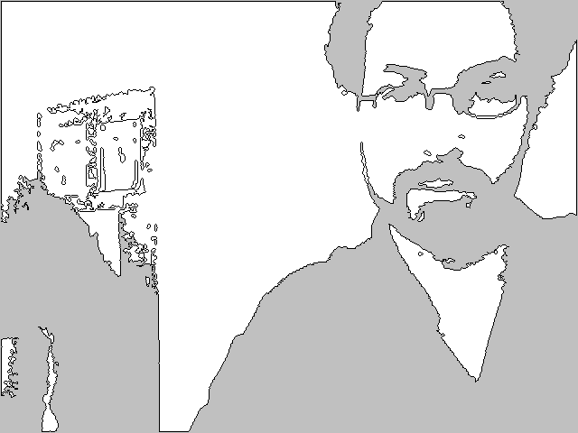

| Name |
Blob |
| Examples |
import hypermedia.video.*;
OpenCV opencv;
void setup() {
size( 640, 480 );
// open video stream
opencv = new OpenCV( this );
opencv.capture( 640, 480 );
}
void draw() {
background(192);
opencv.read(); // grab frame from camera
opencv.threshold(80); // set black & white threshold
// find blobs
Blob[] blobs = opencv.blobs( 10, width*height/2, 100, true, OpenCV.MAX_VERTICES*4 );
// draw blob results
for( int i=0; i<blobs.length; i++ ) {
beginShape();
for( int j=0; j<blobs[i].points.length; j++ ) {
vertex( blobs[i].points[j].x, blobs[i].points[j].y );
}
endShape(CLOSE);
}
}
|
| Description |
A storage object containing a blob detected by OpenCV.
Returned by blobs() method. |
| Syntax |
|
| Fields |
| area |
The area of the blob in pixels |
| centroid |
The centroid or barycenter of the blob |
| isHole |
Is this blob a hole inside of another blob? |
| length |
The length of the perimeter in pixels |
| pixels |
A list of color int, containing the image pixels created by loadPixels() |
| points |
The list of points defining the shape of the blob |
| rectangle |
The containing rectangle of the blob |
|
| Usage |
Application |
| Related |
blobs()
|